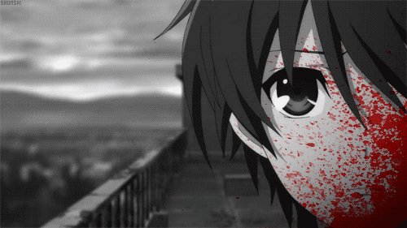
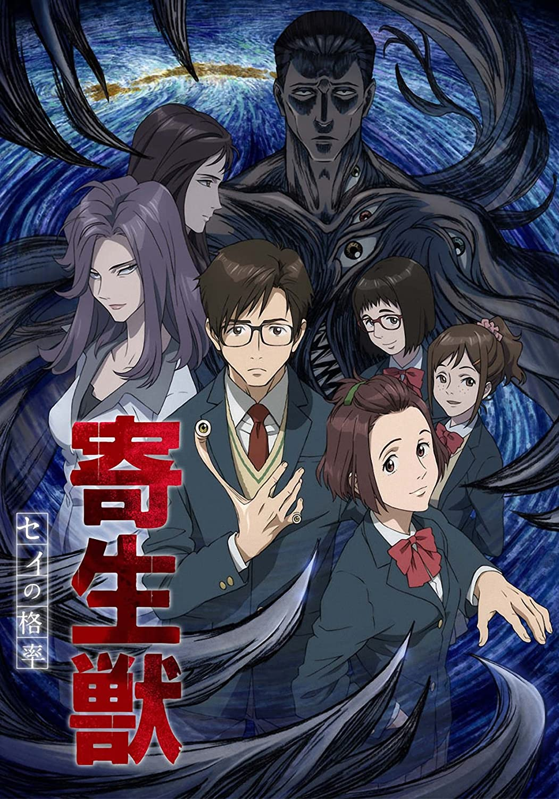
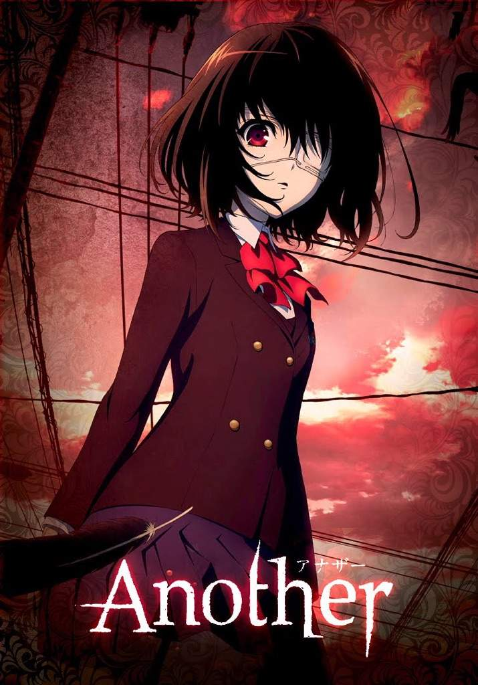
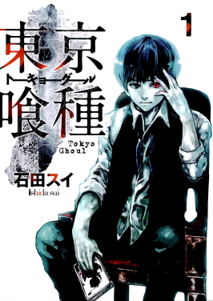
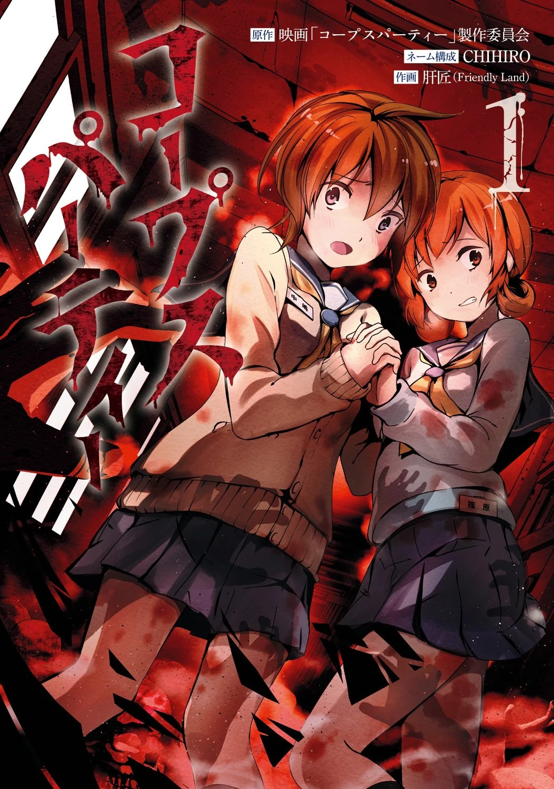

What Is An Horror-Based Anime?
The horror genre in anime is about thrill! Bewary of jumpscares since every episode will want you to look away from the screen. Horror anime does a great job of giving people the chills. The characters are animated in such creepy style. Occassionaly, the anime creator will make their characters look sinister and sometimes add a film grain to make the atmosphere a bit nerve-racking. On top of that, eerie music is implemented! The common thing among all horror anime is the amount of violent scenes. Whether it be a character getting murdered, someone dying, or just the sight of blood, these things enhace the viewer's experience making the show scarier to watch. The horror genres contains a lot of creepy and terrifying characters, gruesome scenes, violence, and eerie vibes. Here are a few examples of horror-based animes.
Parasyte: The Maxim
Izumi Shinichi, a 16-year-old who lives with his parents in Tokyo undergoes an uncomfortable experience. While Shinichi is sleeping, an alien, which are also known as "Parasytes", burrows into his arm. Parasytes are strong enough to burrow into human bodies and take host of the person's brain, which prevents them from acting independently. The Parasyte that burrowed into Shinichi's arm failed take over his brain because he had his headphones on while sleeping. Consequently, Shinichi and the Parasyte become two separate identies in the same body. They have different personalities and intelligence. Given the amount of power that the Parasyte gives to Shinichi, he decides to defeat the other Parasytes on earth. The other people who have been dominated by the parasytes have disfigured bodies which makes the anime hard to watch. The animations will defintely creep you out! IMDb rated the anime a 8.3/10 and it aired in 2014.
Another
Another takes place in Yomiyama North Middle School. Specifcally, there was a popular student who died. Being loved by every student, they refused to believe that she died. Due to this, her image appears in the class photo, even though she was not alive during the time of the photoshoot. Although this sounds scary, the students make it seem like it was nothing, so each year they allow one student who has passed away to be part of the class photo. Seeing that this is not normal, a curse falls upon the students and kills several of them in gruesome ways. To prevent this, the students have to treat one of their students as if they were dead. One of these character is Mei Misaki. The protagonist Kouichi Sakakibara questions why people ignore her presence because he can physically see her. As he gets closer to Misaki, he discovers the tragic truth of his school and why its students are treating Misaki as deceased. IMDb rated the anime a 7.6/10 and it aired in 2012.
Tokyo Ghoul
This anime follows Ken Kaneki, a college student who ends up surviving an encounter with Rize Kamishiro, his date. As it turns out, Kamishiro is a "ghoul", creatures who eat people because of their never-ending hunger. After being attacked by her, Kaneki is taken to the hospital in critical condition. Kaneki eventually discovers that he underwent a surgery that transformed him into a half-ghoul. The surgeons managed to transplant Kamishiro's organs into Kaneki. This does more damage than help to Kaneki and denies that he is becoming a half-ghoul. The viewer is left with scenes in which Kaneki is struggling to survive without having to feed on humans because anything else he eats will make him vomit. In these scenes, he is losing a lot of weight, going insane, and transforming slowly into a ghoul. Kaneki struggles to fit in the ghoul society, as well as keeping his identity a secret from his human freinds. IMDb rated the anime a 7.8/10 and it aired in 2014.
Corpse Party: Tortured Souls
Corpse Party: Tortured Souls takes place in Heavenly Host Elementary School, a legendary elementary school involving ghost stories because of its eerie past. The school was eventually destroyed following the murders and disappearances of the school's staff and students. Taking this information into consideration, what ends up happening? Well, another school called Kisaragi Academy is built on the same place where Heavenly Host Elementary School originally stood. A group of students are eventually teleported to a time where the previous school existed but now it is haunted by ghosts. Seperated from the real world, the students try to survive and find an exit so they can go home. While they are trying to do this, they discover the horrible truth of the school's history. This anime tells us that although there is a past, it is sometimes close to us in the present. IMDb rated the anime a 6.5/10 and it aired in 2013.